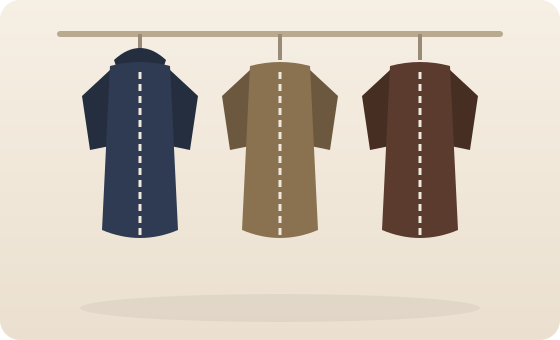

Our Story
About Tucklers Soft Layers
Tucklers began in a drafty Portland workshop with a single stubborn belief: a great jacket should keep you warm without weighing you down. We were tired of outerwear that was either stylish-but-freezing or toasty-but-shapeless — so we set out to make layers that do both.
Every piece starts with the fill and the lining. We test down and synthetic insulation in real winters, obsess over how a collar sits, and refuse to ship a jacket until the zip glides and the seams hold. The result is outerwear that feels light on your shoulders, looks sharp on the street, and lasts for years instead of seasons.
